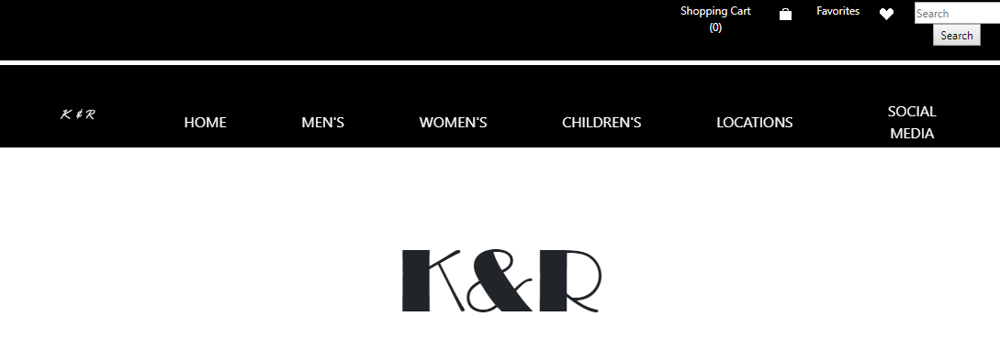
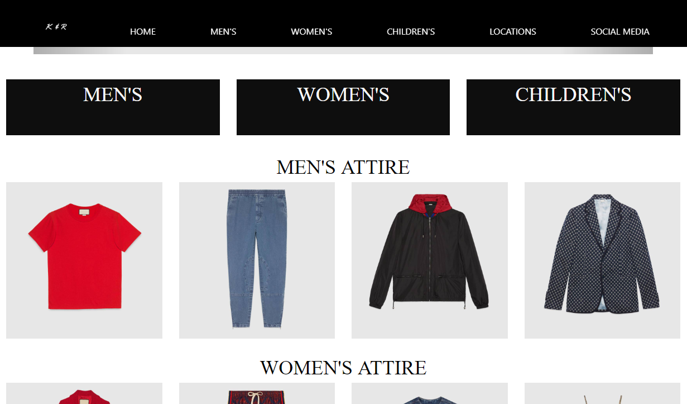
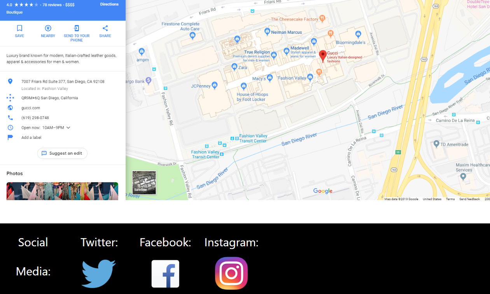
This is a project called PROJECT STORE/BRAND that I did in Web Design around April 10, 2019, where the class had
to design an online shop for clothing attire. Since I designed the website myself, I had to often search up how to implement
certain elements on Google, and I also often asked the teacher and fellow peers for help.
What was included: grid layout, Javascript, navigation bar.
(Disclaimer: All photos used in the website belong to the company Gucci. I do not own any of the pictures of clothing.
These photos were used for non-profit, educational purposes.)
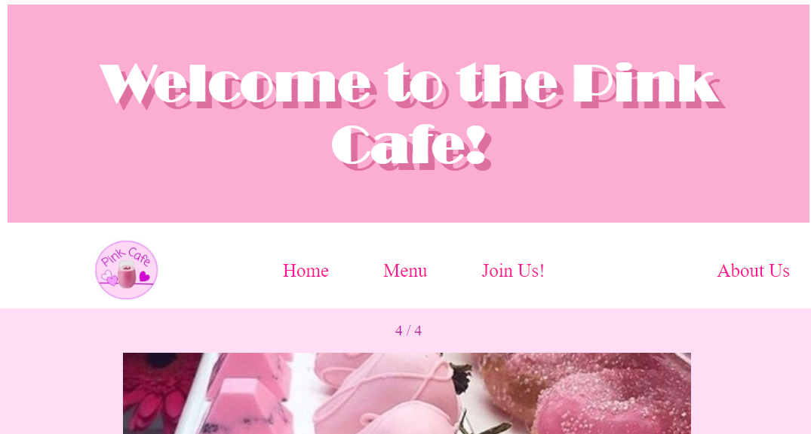
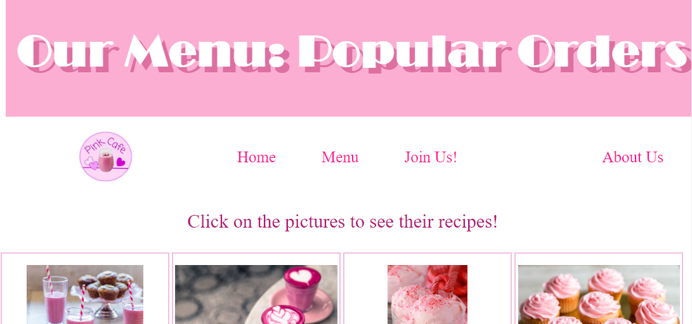
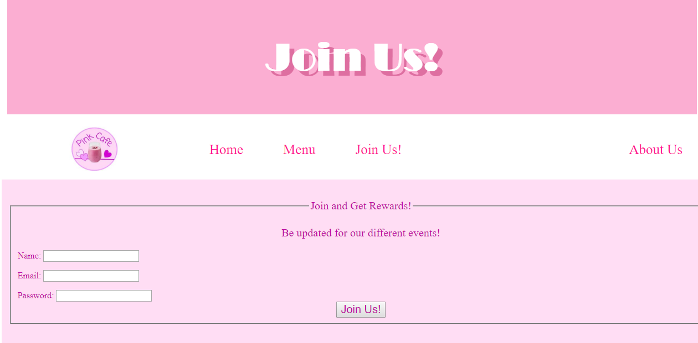
This project is called FOOD/BEVERAGE SITE, which I completed in Web Design around February 14, 2019.
This website was also designed by myself. For this project, the prompt was to design a website for
a supposed food or beverage location.
What was included: Navigation bar, linking pages, text edits, color scheme.
(Disclaimer: I do not own any of the pictures of food.
These photos were used for non-profit, educational purposes.)
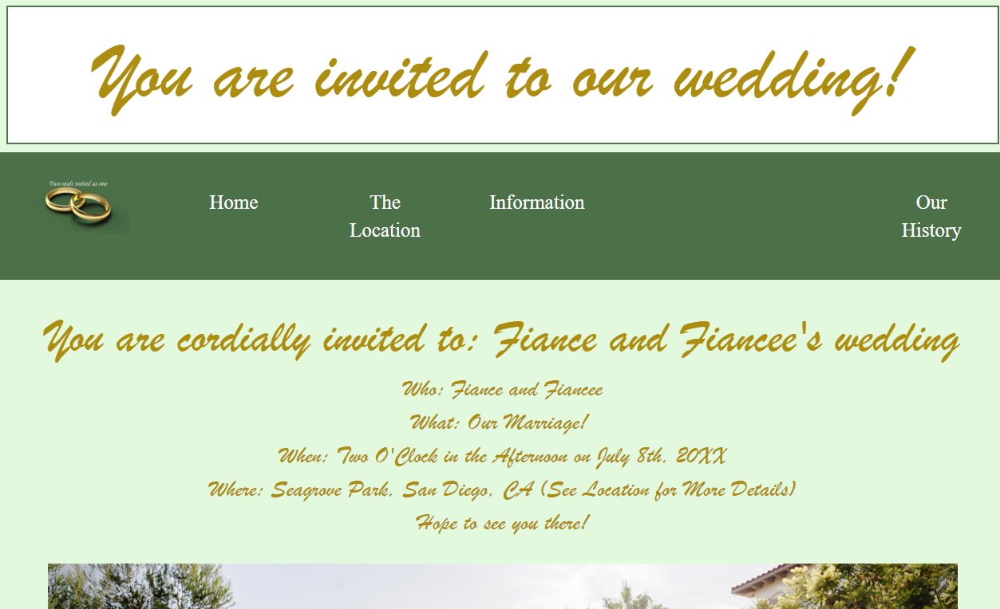
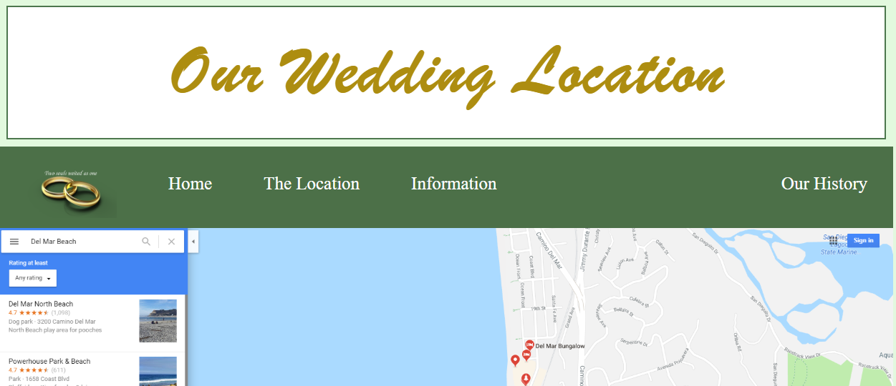
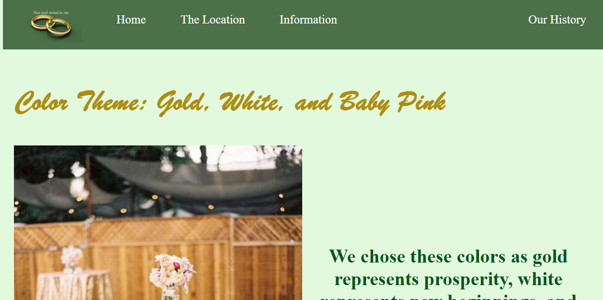
This project is called EVENT, which I completed for Web Design around March 18, 2019. The premise of
this project was to design a website for an important event that is to occur.
I chose to create a website for a pretend wedding, and included information that would be necessary for a real wedding.
One difficult part about this project involved choosing fonts. There were many beautiful fonts that I found online, but many of them did not
work. In the end, I managed to find a nice looking and compatible font.
What was included: Navigation bar, color scheme, font scheme, link opening a page in a new tab, cursor design.
(Disclaimer: I do not own any of the pictures used. These photos were used for non-profit, educational purposes.)
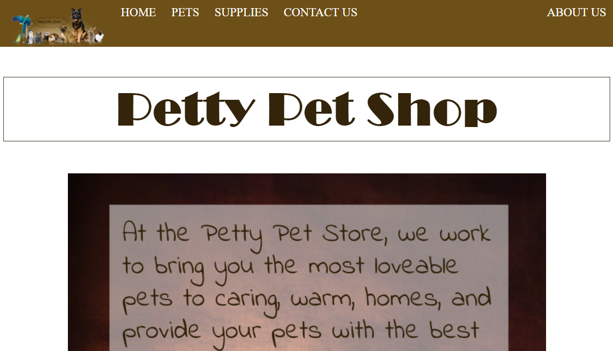
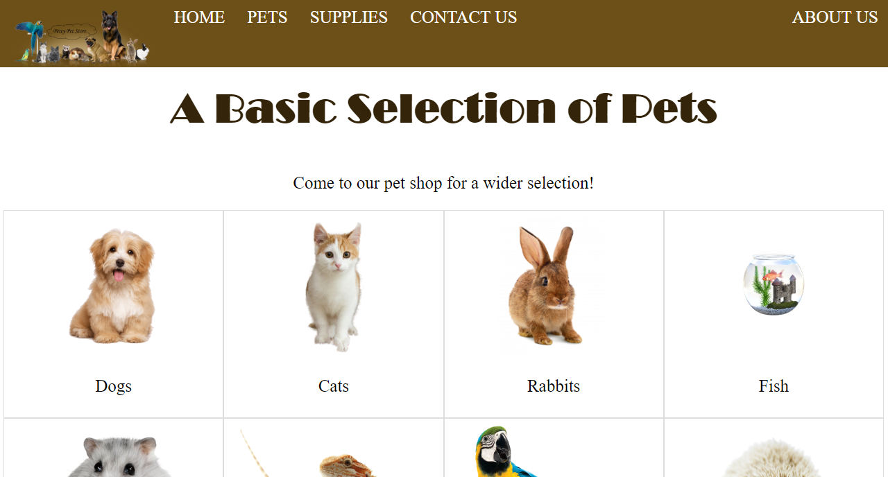
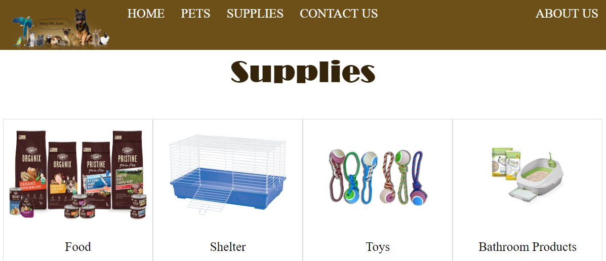
This project is called FINAL PROJECT, and is for a class called Computer Information Systems. This
website was part of a larger project, which included creating a logo, a Google Form and Slides, a word
document with all of our information, a website, and a Word application of some kind.
What was used: Navigation bar, color scheme, box/grid layout.
(Disclaimer: I do not own any of the picture used. These photos were used for non-profit, educational purposes.)